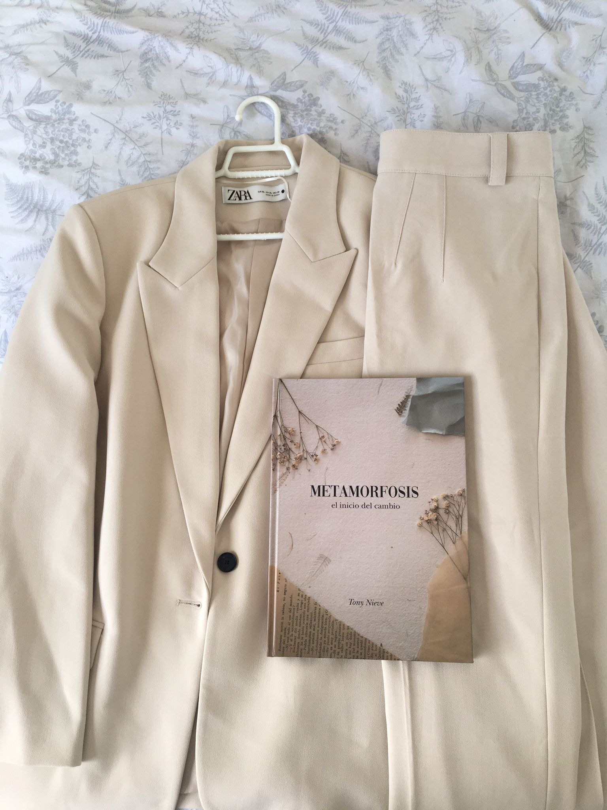

Metamorfosis
Concept
My Final Degree Project, a book about endings and about closing one chapter so another can begin. I wrote, illustrated, designed and laid it out from start to finish.

01 · Conceptualisation
The story follows the stages of grief, from anger to acceptance, and ends with a butterfly. I wanted that change to be seen as well as read, and that's where its visual language comes from: collage and illustration.
02 · Material selection
The collage starts with physical material: old paper, postcards, black and white photographs and dried flowers. On the table, I tried out which textures and images carried the tone of the story.
03 · Composition and design
Then came composition: cutting, layering and letting image, text and flowers share a single piece. That same language reaches the cover.
04 · Illustration and process


05 · Layout
Everything came together in Adobe InDesign: illustration, collage, text and type, page by page.


06 · Printing and finishes
In the end, everything moves onto paper. The printed book brings collage, illustration and text together in a single object.


07 · Photoshoot

08 · Final degree project presentation
The final project defence was where Metamorfosis came to a close: the moment to present the whole project, from the collage and illustrations to the printed book.
↗ Watch the defenceNext project